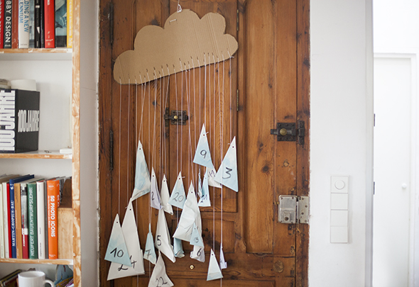

Facebook
Pinterest
Instagram
ES
EN
DE
☰ Menú
Inicio
La casa
Accesorios
Decorar
Instrucciones
Ilustración
Cantimploras personalizadas
Cuaderno de manualidades y actividades 01
App Not Online Anymore
Blog
Fiestas
Navidad
Pascua
Halloween
Carnaval y disfraces
San Valentín
Cumpleaños
Día de la Madre/Padre
Vuelta al cole
Estaciones
Primavera
Verano
Otoño
Invierno
Qué hacer
Juguetes
Juegos
Imprimibles
Recetas y comida
Decoración
Pintar
Experimentos
Al aire libre
Aprender
Animales
Regalos y joyas
Construir y trucos
Otras manualidades
Material
Papel
Cartón
Rollos de papel
Reciclaje
Piedras
Hojas y naturaleza
Tela, coser y tejer
Inicio
›
Blog
›
Calendario de Adviento
Calendario de Adviento
Etiqueta
Navidad
7 CALENDARIO ADVIENTO

Ocasión
CALENDARIO ADVIENTO
Ocasión
CALENDARIO ADVIENTO
Ocasión
Calendario de adviento
Navidad
Casi Adviento
Ocasión
Calendario
Navidad
Calendario adviento 01